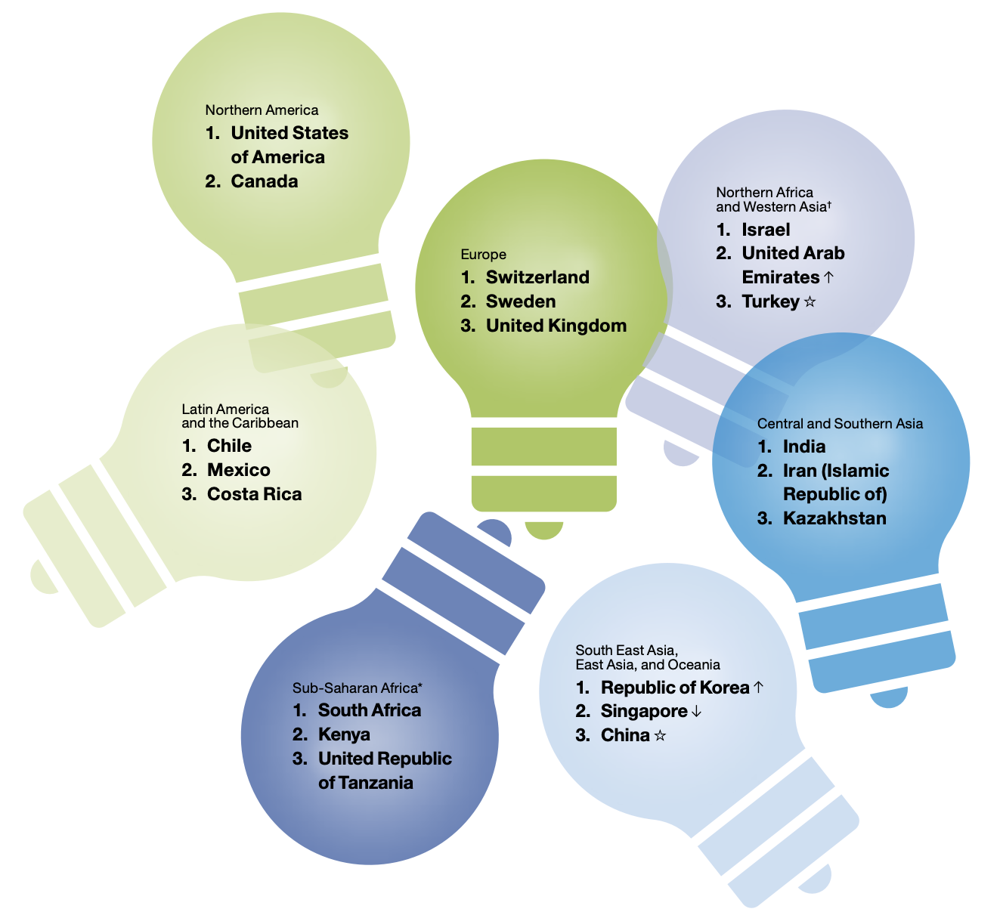
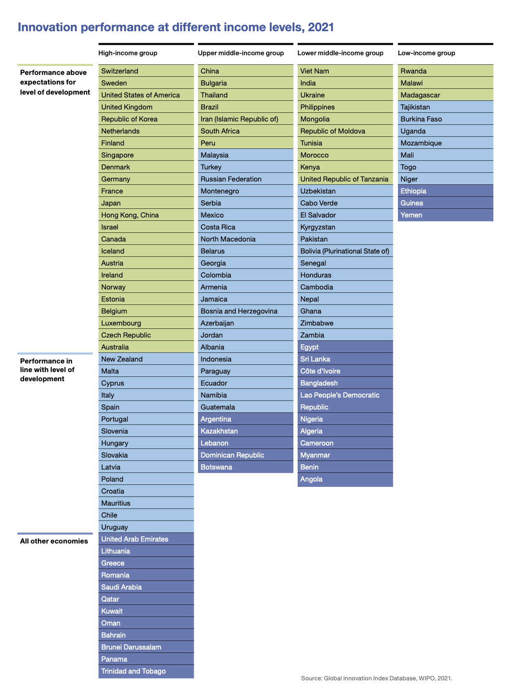

Global Innovation Index
Published by the World Intellectual Property Organization (WIPO)
POL3 357 Indicator Project | Anna Lieb | Feb. 21, 2022
in∙no∙va∙tion (noun):
improvements made to outcomes in the form of
either new goods or services or any combination of these
From the Oslo Manual developed by the European Communities and the
Organisation for Economic Co-operation and Development (OECD),
cited in the Global Innovation Index 2021 Report (p. 175)
Top 3 innovation economies by region (from 2021 GII report):

Origins: How did the GII emerge?
-
The GII project was created by
Professor Soumitra Dutta
in 2007 while he was a faculty member at the international business school INSEAD.
-
WIPO began co-publishing the GII in 2012. As of 2021,
the GII is published by WIPO in partnership with various corporate
partners, academic institutions, and the GII Advisory Board
(WIPO 2021, p. vii - xvii).
-
The motivations for creating the index were based on global trends
and modern principles for promoting growth, including:
-
Governments in both developed and developing countries hope to
use innovation as a strategy to drive economic
progress and competitiveness.
-
The modern definition of innovation has extended beyond
just research and development (R&D) and published scientific papers
to include a broader range of social, business, and technical aspects.
-
Recognizing innovation in emerging markets is critical for
inspiring the next generation of entrepreneurs and innovators.
Professor Soumitra Dutta
"The goal was to find and determine metrics and methods that could
capture a picture of innovation in society that is as complete as possible."
(WIPO 2021, p. 175)
Measurement: What does the GII measure?
In order to contextualize the index results, the WIPO report emphasizes that the GII measures
innovation based on "relative infrastructure for innovation" (p. 175). This way, the index
can be used to compare economies within the same region or income group classification.

The GII measurements reflect the idea of "innovation without research" and
an awareness that incremental forms of innovation can influence development
(WIPO 2021, p. 176). This improves the GII's ability
to understand innovation in low- and middle-income economies.
Indicators
The GII 2021 model includes 81 indicators— there are too many to
analyze in depth here (see p. 183-202 for this info). However, the indicators that
make up the overall GII score fall into three categories:
- quantitative/objective/hard data (63 indicators)
- composite indicators/index data (15 indicators)
- survey/qualitative/subjective/soft data (3 indicators)
Measurement breakdown:
Hover over cards to view sub-index measures.
Five pillars:
Institutions
Human capital and research
Infrastructure
Market sophistication
Business sophistication
Innovation Input Sub-Index:
Elements of the economy that enable and facilitate innovative activities
Two pillars:
Knowledge & technology outputs
Creative outputs
Although the Output Sub-Index includes only two pillars,
it carries the same weight as the Input Sub-Index in calculating the overall GII scores.
Innovation Output Sub-Index:
Innovative activities within
the economy
The overall GII score is the average of the Input and Output Sub-Indices.
This overall score is used to produce the GII economy rankings (WIPO 2021, p. 176).
Importance: Why is the GII significant?
The 2021 Global Innovation Index report defends the significance of the index with
the following guiding principle:
"The structure of knowledge production activity is more complex and
geographically dispersed than ever" (WIPO 2021, p. 176).
This reasoning is supported by other theories about modern trends in
technology, innovvation, and political economy.
Theoretical basis
-
The model of platform capitalism suggests that increased market
dependency and changing social relationships are influential in the
modern innovation economy.
-
The structure of platform capitalism “demands constant
technological change” because capitalists are incentivized to constantly
innovate to increase productivity (Srnicek 2017, p. 1-2).
-
This understanding of the relationship between business and technology
explains the need for a measure like the GII which can take into
account a wider, more nuanced array of interdisciplinary factors.
-
The GII also builds from similar ideas in surveillance capitalism.
Under surveillance capitalism, modern innovation relies on the commodification of social data,
rise of digital interconnectedness, and exploitation of previously
private aspects of life (Zuboff 2019).
-
This demonstrates the demand for more dynamic
metrics that expand the definition of innovation and take into
consideration additional elements of social and digital
innovation beyond scientific papers and patents.
-
More generally, we are living in an age of relatively limited government
regulation of technology and innovation. According to theory by
technology economist Carlota Perez, increased government involvement
is needed to usher in a "golden age" in which innovations throughout
the economy and around the world can reach their full potential (Perez 2020).
-
If governments around the world hope to follow Perez's advice, they
will need indices like the GII to better assess rates of growth and
trends in innovation to make informed policy decisions.
Limited alternatives
According to the 2021 WIPO report, the GII is also significant for its
unique compilation of multiple indicators from many different nations.
The next section provides some individual measures which can serve as
alternative indicators for innovation, but these measures do not attempt
to quantify innovative activity more generally. The 2021 GII report
characterizes this difference as follows:
"Most measurements struggle to appropriately capture the innovation
outputs of a wider spectrum of innovation actors, such as the services
sector or public entities ... [Other surveys] fail to provide a good and
reliable sense of cross-economy innovation output performance,
and are often not applicable to developing economies where innovation is often informal" (p. 176).
Although the drawbacks to this compilation approach will be discussed
in the Criticisms section, the GII methodology does contribute unique and useful
insight into global understandings of innovation by quantifying multiple
dimensions of modern business, technology, and economy.
Alternatives & competing indicators
Information about alternatives below are from the World Bank Science
and Technology Indicators. Descriptions are adapted from
the World Bank site.
These indicators are distinct from the GII
Research and development expenditure (% of GDP)
Expenditure on research and development (R&D) is a key indicator of
government and private sector efforts to obtain competitive advantage
in science and technology.
High-technology exports
The classification of exports is based on the importance of expenditures on
research and development relative to the gross output and value
added of different types of industries that produce goods for export.
Patent applications
Patent data are a great resource for the study of technical change
in a country or region. Patent data provide a uniquely detailed
source of information on inventive activity and the multiple
dimensions of the inventive process (e.g. geographical location,
technical and institutional origin, individuals and networks).
Furthermore, patent data form a consistent basis for comparisons
across time and across countries.
Criticisms of the GII
While the GII does a good job of measuring relative performance and
giving attention to low- and middle-income countries, the data is also
subject to constant year-to-year changes in methodology, weighting,
and choices made by the WIPO team and GII Advisory Board.
The resulting results and rankings can be impacted by these
abstract methodological choices. When compared to a single
indicator, an index is therefore vulnerable to subjectivity and
inconsistency between years and countries.
The 2021 WIPO report does acknowledge some of these inconsistencies and
explains that the GII project is "an ongoing attempt to find metrics and
approaches that capture the richness of innovation more effectively" (WIPO 2021, p. 180).
For example, one could argue that some of the indicators that factor in
to the GII are not strictly indicative of innovation levels,
such as "Number of national feature films produced," "University–industry R&D collaboration,"
"Females employed w/advanced degrees," "Domestic industry diversification," and "Environmental performance."
As recently as 2016, a Joint Research Centre statistical audit found that
"more than 40 economies had confidence interval widths of more than 20 positions"
(WIPO 2021, p. 179). This issue of precision was especially relevant to
countries with limited data, which also tended to be low- and middle-income
countries.
The GII hopes to serve as a tool for “recognizing and
celebrating innovation in emerging markets” and “inspiring people –
especially the next generation of entrepreneurs and innovators.” However,
if the WIPO and GII partners hope to provide an inclusive innovation
index, then they must continue to work to overcome data limitations
and ensure that their methodology accurately represents low- and middle-income
nations as well as they represent wealthier nations.
Additionally, this methodology should be as rigorous, transparent,
and accessible as possible, so that analysts from around the world can
understand caveats in GII results and contextualize their conclusions.
Sources
Perez, Carlota (2020). "A sustainable golden age could lie ahead."
Economist Impact.
https://impact.economist.com/projects/innovation-matters/blogs/a-sustainable-golden-age-could-lie-ahead/
Srnicek, Nick (2017).
Platform Capitalism.
Cambridge, UK; Malden, MA: Polity Press. Chapter 1.
World Bank Group (2022). Science & Technology Data.
https://data.worldbank.org/topic/14
WIPO (2021).
Global Innovation Index 2021:
Tracking Innovation through the COVID-19 Crisis.
Geneva: World Intellectual Property Organization.
https://www.wipo.int/edocs/pubdocs/en/wipo_pub_gii_2021.pdf
Zuboff, Shoshana (2019).
The Age of Surveillance Capitalism.
New York: Public Affairs. Chapter 1.